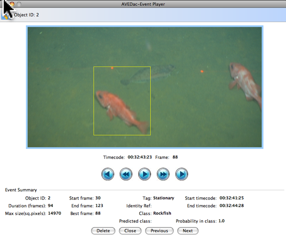

Automated Visual Event Detection
AVED Event Player
Event Player
In this view you can playback the event frame-by-frame. This is useful to see the event in the context of the entire frame, rather than just a thumbnail.The event playback buttons have controls similar to Quicktime and RealPlayer to play, pause, rewind, or jump to the beginning or end of the sequence. However, keep in mind that this is not a actual player because it does not playback the event sequence in real-time (use an external video player like Quicktime it you want to playback in real-time). It simply displays an event frame-by-frame with a short delay in between.
